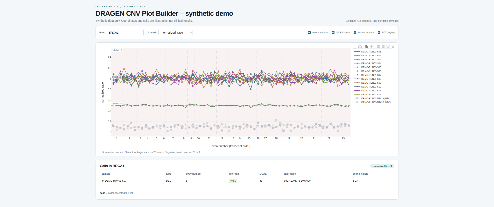

The output
One file the reviewer opens, searches, and attaches to a case

Why it exists
A copy number, a quality score, and a filter tag do not settle the question
A CNV call arrives as those three numbers. Deciding whether it is real is a judgement, and the numbers alone do not support it. Five things do, and the reviewer needs them in one view.
- Per exon
- Every exon in the called region as its own point, not the segment average — a clean shift across a whole gene looks nothing like one noisy capture target.
- The batch
- The same targets in every other sample, on the same axis. A dip shared by the whole batch is a capture or GC artifact, not a deletion in one patient.
- Copy states
- Reference lines where diploid, heterozygous deletion, and heterozygous duplication should sit, so magnitude is read against an expectation rather than a feeling.
- Controls
- How the no-template controls behaved at the same positions.
- The caller
- What the caller decided, including the calls it filtered out, and why — a rejected call the reviewer never sees is a rejected call the reviewer cannot disagree with.
Assembling that by hand means joining three files per sample and plotting gene by gene.
Who it is for
People who have to defend the call
- Clinical genomics reviewers and variant scientists confirming or rejecting exon-level calls before they reach a report
- Molecular pathology and diagnostic lab staff who need the evidence in one view rather than across three files
- NGS bioinformatics and field support engineers triaging whether a suspicious call is biology or the panel
- Panel and assay developers watching how a capture design behaves across a batch, target by target
- Anyone shipping analysis tooling to non-technical users on locked-down clinical workstations
How it works
Three stages, one artifact
-
DRAGEN result folders
One folder per sample, plus an annotation source that names genes and exons.
- per-target normalized coverage — required
- segment means — optional
- calls and filter tags — optional
- gene / exon annotation
-
Build table
Annotate every target to its gene and exon, attach the segments and the calls, and emit one row per sample × target.
-
Build plot
Group by gene, lay out the exon axis, attach the calls, embed one lazily-parsed payload per gene, inline Plotly.
One self-contained interactive HTML file opens offline, no install, nothing to fetch
What the demo shows
Six findings, planted on purpose
12 genes · 14 samples · 2 no-template controls · fixed seed
| Gene | What it looks like | The point |
|---|---|---|
| BRCA1 | Every exon at half coverage, PASS deletion across the gene | The textbook true CNV, in one sample only |
| EGFR | A short run of exons lifted, PASS duplication | A focal event that reads as convincing because the flanking exons are flat |
| PTEN | One exon low, everything else normal — call filtered | A single noisy target. This is why filtered calls are shown |
| CFTR | The same two exons dip in every sample | A panel artifact, not a deletion. Only visible because the batch is overlaid |
| DMD | A deletion on a negative-strand gene | The plot reads 5′→3′, in transcript order rather than coordinate order |
| TP53 | A plausible-looking event the caller rejected on quality | The reviewer gets to see it, and to disagree |